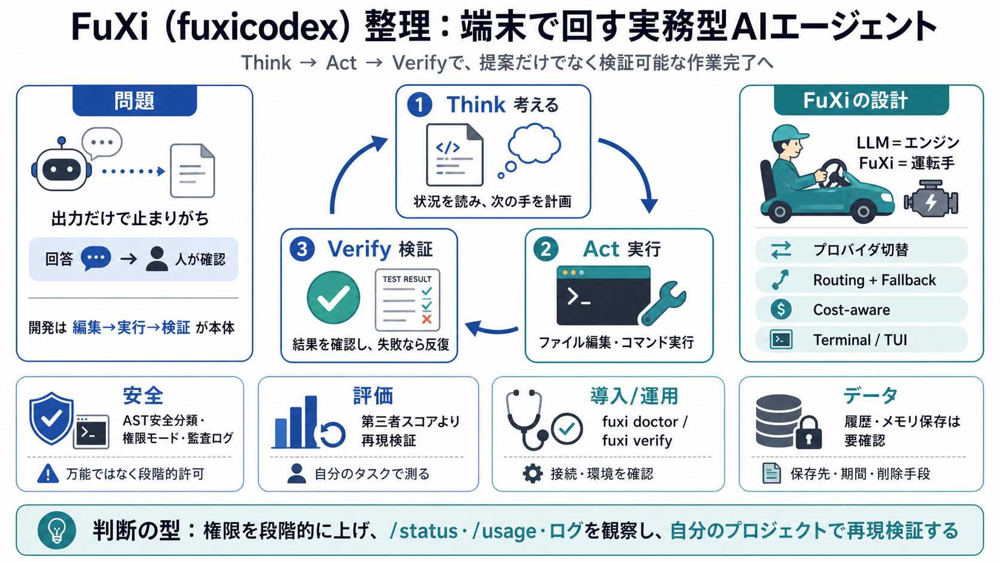

GitHub - fuxicodex/Fuxi: FuXi is a fast, self-contained AI coding agent that ...
## How FuXi compares FuXi is a terminal-first AI coding agent designed to be provider-agnostic. Feature availability re…

## How FuXi compares FuXi is a terminal-first AI coding agent designed to be provider-agnostic. Feature availability re…
20, 2026, but is proprietary (the repo is for issues and docs, with no open-source license). It supports MCP, sub-agents…
`Muse Spark 1.1 - Meta Superintelligence Labs, July 9, 2026; multimodal reasoning model built for agentic tool use, comp…
The index is computed from DeepSWE, Terminal-Bench v2, and SWE-Atlas-QnA. For the current Artificial Analysis Coding Age…
``` # SWE-bench Verified benchmarks (May 2026) ## Aider + Claude Sonnet 4.6 → ~74% ## Aider + Claude Opus 4.7 → ~87% ## …